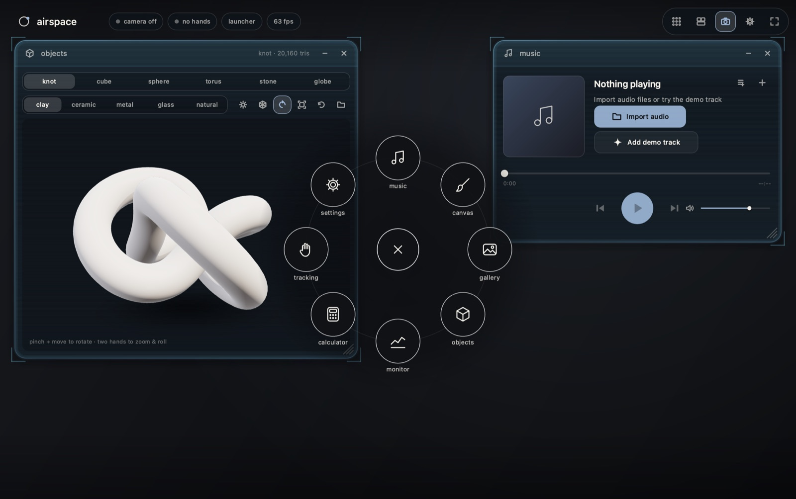
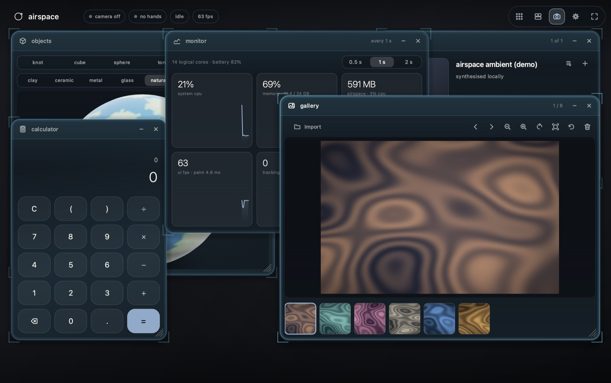
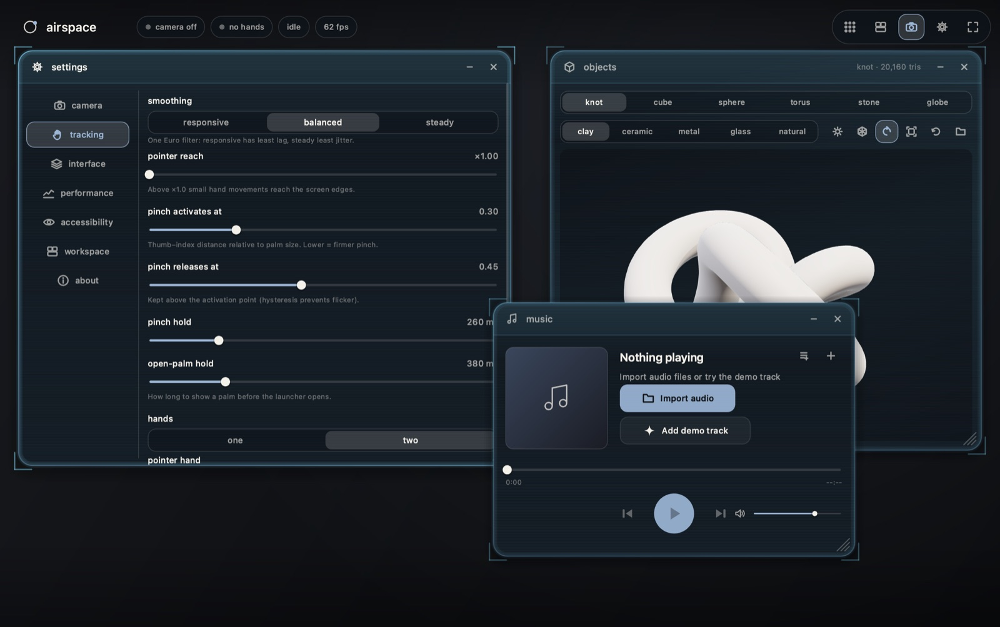

Glass windows over your room
Holographic windows let your room and your hands show through the background while the content stays solid. Open, focus, drag, resize, minimise and arrange them.
open source · on-device hand tracking
airspace turns an ordinary webcam into an input device. Point to move the cursor, pinch to click, pinch and move to drag, open your palm for the launcher. Your camera feed becomes the backdrop of a workspace of floating glass windows, and none of it leaves your computer.
Mac app: Apple Silicon, 145 MB, free under the MIT license.

A small version of airspace that runs in this page. Use one hand, about an arm's length from the camera, with your palm facing the screen.
Video stays in this browser tab: no frames are uploaded or recorded. The first start downloads the MediaPipe hand-tracking library (from jsDelivr) and Google's hand model, about 22 MB together.
The full app is a Python desktop with a real window manager and working apps.
Holographic windows let your room and your hands show through the background while the content stays solid. Open, focus, drag, resize, minimise and arrange them.
Person segmentation lets your hands pass in front of windows, with a clear lens around the fingertip so targets stay readable.
Pinch a window with both hands and stretch to resize it, or zoom and rotate photos and 3D objects.
Music player, air-drawing canvas, photo gallery, real-time 3D object viewer, system monitor, calculator and a live tracking inspector.
A fingertip cursor that holds still while you pinch, smoothing that trails by only a few pixels, and per-user pinch calibration.
Every action also works with the mouse and keyboard, and ⌘Q always quits.


Apple Silicon (M1 or later). Tested on macOS 26.6.
airspace.app to Applications, and double-click it.On Intel Macs, Windows or Linux, run it from source with Python 3.11 or newer. Those platforms haven't been tested. Release notes
Both the app and this page track your hands on your own device. Nothing uploads or records camera frames, nothing uses the microphone, and neither has analytics or cookies. This page loads the tracking library from jsDelivr and the hand model from Google's model storage. After that, the camera image never leaves your browser. The camera stops when you leave or hide this tab, and the Mac app pauses it while your screen is locked.